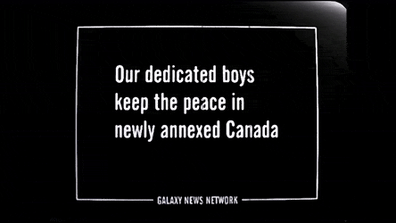
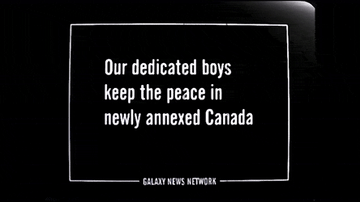

The game is set in a post-apocalyptic world following "the Great War," a nuclear war that occurred on October 23, 2077. The war lasted less than two hours but caused immense damage and destruction. Before The Great War came the Resource Wars, during which the United Nations had disbanded, a plague rendered the United States paranoid and Canada was annexed. The game takes place in 2161, 84 years after the Great War in Southern California and begins in Vault 13, the protagonist's home. Vault 13's water chip, a computer chip responsible for the water recycling and pumping machinery, has broken. The vault overseer tasks the protagonist with finding a replacement. They are given a portable device called the "Pip-Boy 2000" which keeps track of mapmaking, quest objectives, and various bookkeeping aspects. Armed with the Pip-Boy 2000 and meager equipment, the protagonist is sent out into the remains of California to find another water chip.
the main character of the game, he is send out of his vault by his overseer in a quest to find the wanted water chip, wich takes him all around the wasteland of southern California
the ruler and leader of a settlement close to where the game starts called Shady Sands, wich would later evolve into the New California Republic.
the daughter of Aradesh, a naive and courious young girl whos life would turn around when she takes the place of her father as the ruler of Shady Sands.
the master, formerly known as Richard Grey, but after a horrible incident involving pre-war chemical experiments, his body compleatley disformed and mutated into a horrible mass, with those chemicals he found and dive in, his mission is now to mutate the whole world an create a new "phase" of humanity